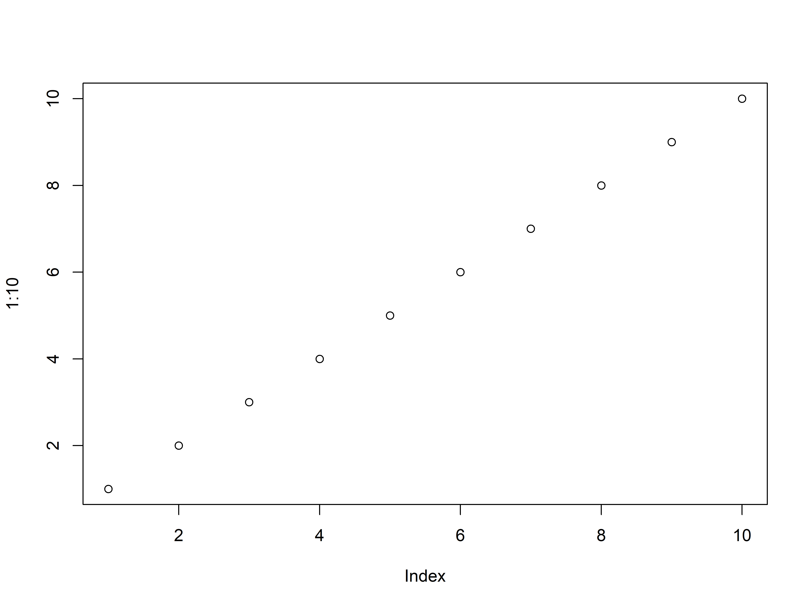

shalom with AI
2025年2月23日
欢迎来到《医学生R语言入门指南》。本书旨在帮助医学生掌握R语言的基础知识，并将其应用于医学研究和数据分析中。
本书分为三个主要部分： 1. 基础知识 2. 数据处理 3. 医学统计
建议初学者按照章节顺序学习，每章都包含理论讲解和实践练习。
plot(1:10)

欢迎关注微信公众号【R语言与可视化】，获取更多R语言学习资源和医学统计分析案例。
# 前言 {.unnumbered} 欢迎来到《医学生R语言入门指南》。本书旨在帮助医学生掌握R语言的基础知识，并将其应用于医学研究和数据分析中。  ## 本书特点 - 针对医学生的特定需 - 实用的医学数据分析案例 - 循序渐进的学习路径 - 丰富的实践练习 ## 如何使用本书 本书分为三个主要部分： 1. 基础知识 2. 数据处理 3. 医学统计 建议初学者按照章节顺序学习，每章都包含理论讲解和实践练习。 ```{r} plot(1:10) ``` ::: {.callout-note appearance="simple"} ## 获取更多资源 欢迎关注微信公众号【R语言与可视化】，获取更多R语言学习资源和医学统计分析案例。  :::